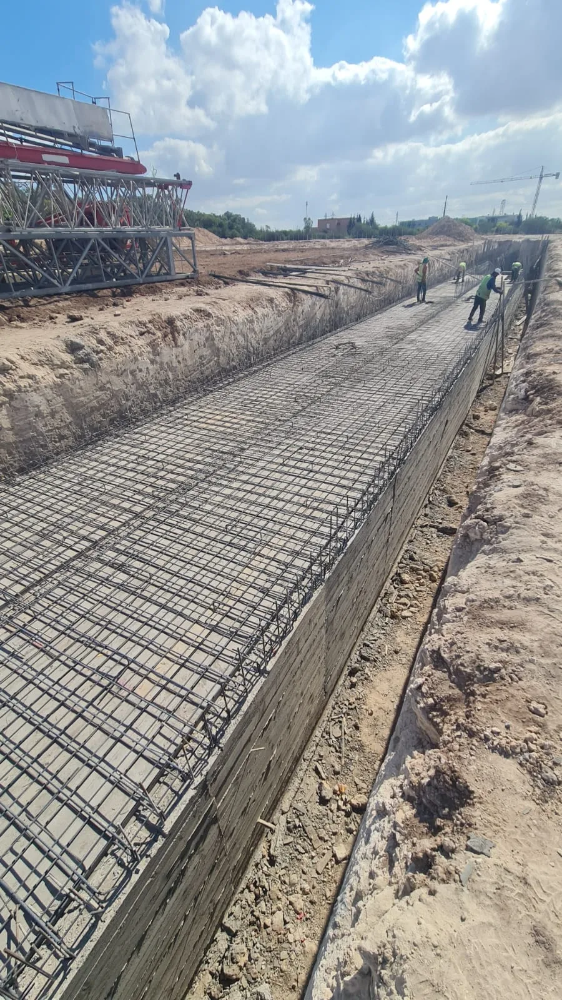

Gros Œuvre Maroc — Béton Armé & Construction
Fondations, béton armé, maçonnerie, dalles et structures parasismiques — WAHID EASY TRAVAUX réalise vos travaux de gros œuvre selon les normes marocaines en vigueur à Casablanca et partout au Maroc.

Construction gros œuvre selon les normes marocaines
WAHID EASY TRAVAUX réalise tous vos travaux de gros œuvre au Maroc : fondations, béton armé, maçonnerie, dalles et structures. Nos ingénieurs structure maîtrisent parfaitement le Règlement Parasismique Marocain (RPS 2011) et les normes béton en vigueur au Maroc.
De la villa individuelle au bâtiment industriel, en passant par les immeubles résidentiels et les équipements publics, nous assurons la réalisation complète du gros œuvre avec une qualité irréprochable à Casablanca, Rabat, Marrakech et dans tout le Maroc.
Gros Œuvre — Prestations complètes au Maroc
Le gros œuvre au Maroc désigne l'ensemble des travaux qui constituent la structure portante d'un bâtiment. Il comprend les fondations, les éléments en béton armé (poteaux, poutres, voiles, dalles) et la maçonnerie. WAHID EASY TRAVAUX réalise des structures solides et durables, conformes aux normes parasismiques marocaines, pour tous types de projets de construction.
Travaux de fondations
Fondations superficielles
Les fondations superficielles sont utilisées lorsque la couche de sol porteur se trouve à faible profondeur. Nous réalisons :
- Semelles isolées sous poteaux en béton armé
- Semelles filantes sous murs porteurs
- Radiers généraux pour sols de faible portance
- Longrines de liaison et de redressement
- Béton de propreté et coffrage de fondations
Fondations profondes
Pour les sols compressibles ou les bâtiments lourds, nous réalisons des fondations profondes selon l'étude géotechnique :
- Pieux forés et battus en béton armé
- Micropieux haute pression
- Colonnes ballastées et inclusions rigides
- Têtes de pieux et longrines de chapeau
Structure béton armé
Poteaux et poutres
La réalisation de poteaux et poutres en béton armé demande une grande précision dans la mise en œuvre des aciers, le coffrage et le coulage du béton. Nos équipes maîtrisent les dosages de béton (B25, B30, B35) et les armatures haute adhérence conformes aux normes marocaines.
- Ferraillage selon plans de l'ingénieur structure
- Coffrage métallique et bois pour poteaux et poutres
- Coulage et vibrage du béton
- Décoffrage et cure du béton
Voiles béton armé
Les voiles en béton armé assurent la résistance aux forces horizontales (séismes et vent). Nous réalisons des voiles conformes au RPS 2011 pour garantir la stabilité de vos constructions au Maroc.
Dalles et planchers
Nous réalisons tous types de dalles et planchers :
- Dalles pleines en béton armé
- Planchers à corps creux (hourdis + dalle de compression)
- Dalles de compression sur prédalles
- Dalles champignon pour grandes portées
- Dalles sur terre-plein
Maçonnerie et remplissage
Murs en blocs béton et briques
Après la réalisation de la structure béton armé, nous effectuons les travaux de maçonnerie et de remplissage :
- Murs extérieurs en blocs béton creux (15, 20, 25 cm)
- Cloisons intérieures en briques creuses
- Chaînages horizontaux et verticaux
- Linteaux de portes et fenêtres
- Acrotères et garde-corps en béton armé
Respect des normes parasismiques au Maroc
Toutes nos constructions de gros œuvre au Maroc sont réalisées selon le Règlement Parasismique Marocain RPS 2011. Nos ingénieurs vérifient systématiquement les plans de ferraillage, les dimensions des sections et les dispositions constructives parasismiques avant chaque coulage de béton.
Pourquoi choisir WAHID EASY TRAVAUX pour votre gros œuvre ?
Ingénieurs structure
Ingénieurs diplômés, maîtrise du RPS 2011 et des normes béton armé NM 10.1.008 en vigueur au Maroc.
Béton contrôlé
Béton dosé et contrôlé en laboratoire agréé. Éprouvettes systématiques pour garantir la résistance structurelle.
Planning rigoureux
Respect des délais de coffrages, ferraillage, coulage et décoffrage pour avancer efficacement sur le chantier.
Coordination complète
Coordination avec le bureau d'études, l'architecte et les autres corps d'état pour un chantier fluide.
Prix transparents
Devis gros œuvre détaillé avec métrés précis. Prix au m² ou au forfait selon votre projet au Maroc.
Tout le Maroc
Casablanca, Rabat, Tanger, Marrakech, Agadir — nous réalisons vos travaux de gros œuvre partout au Maroc.
Déroulement d'un chantier de gros œuvre
Étude des plans
Lecture des plans structure, vérification du ferraillage et coordination avec le bureau d'études.
Fondations
Terrassement, semelles filantes ou isolées, armatures et coulage béton selon l'étude géotechnique.
Structure BA
Ferraillage des poteaux, coffrage, coulage et vibrage du béton armé niveau par niveau.
Planchers
Mise en œuvre des hourdis, pose des armatures de dalle et coulage de la dalle de compression.
Maçonnerie
Montage des murs en blocs béton, cloisons et chaînages selon les plans d'architecture.
Réception
Contrôle final de la structure, remise des PV de réception et des résultats d'éprouvettes béton.
Gros œuvre dans tout le Maroc
WAHID EASY TRAVAUX réalise vos travaux de gros œuvre et béton armé dans toutes les grandes villes du Maroc.
FAQ — Gros Œuvre & Béton Armé Maroc
Nous appliquons systématiquement le Règlement Parasismique Marocain RPS 2011 pour tous nos travaux de gros œuvre. Cela inclut le dimensionnement des sections, les dispositions de ferraillage parasismiques, les longueurs d'ancrage et les jonctions entre éléments structuraux.
Selon les spécifications du bureau d'études, nous utilisons du béton B25 (fc28 = 25 MPa) pour les éléments courants et du B30 ou B35 pour les éléments soumis à de fortes contraintes. Le béton est contrôlé par des éprouvettes testées en laboratoire agréé au Maroc.
Pour tout projet de gros œuvre au Maroc, un bureau d'études techniques agréé est obligatoire. WAHID EASY TRAVAUX peut vous recommander des bureaux d'études partenaires à Casablanca si vous n'en avez pas encore. Nous travaillons en parfaite coordination avec tous les BET pour garantir la conformité de vos structures.
Oui, WAHID EASY TRAVAUX propose des prestations clé en main : depuis le terrassement et les fondations jusqu'à la maçonnerie et la finition extérieure. Nous coordonnons tous les corps d'état pour vous livrer une construction complète dans les délais et budgets convenus.